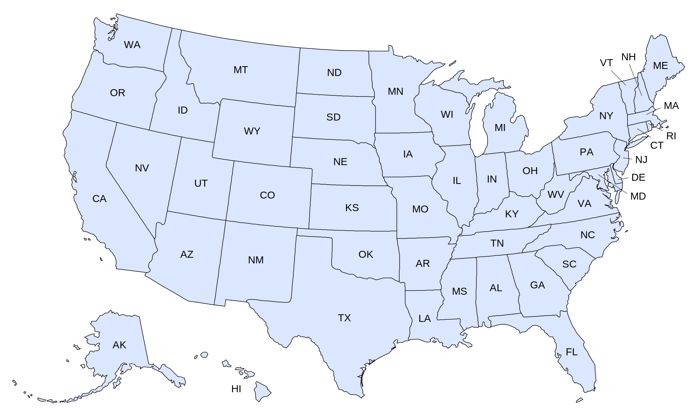

North Dakota Bucket List Hikes

1. Caprock Coulee Loop - Theodore Roosevelt National Park

Becky Boscaljon/Alltrails
| Grade: Moderate |
|---|
| More Images |
| Trail Link |
2. White Butte - Bowman

alanpare/Flickr
| Grade: Moderate |
|---|
| More Images |
| Trail Link |
3. Maah Daah Hey Trail - Sully Creek State Recreation Area

Roderick Eime/Flickr
| Grade: Moderate |
|---|
| More Images |
| Trail Link |